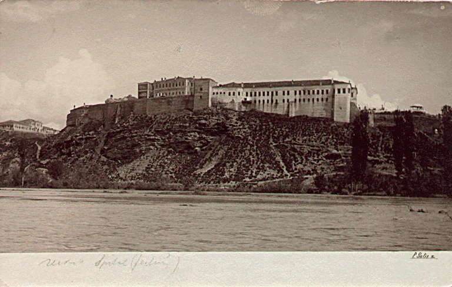
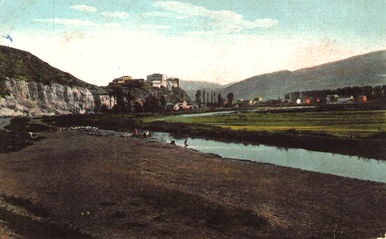
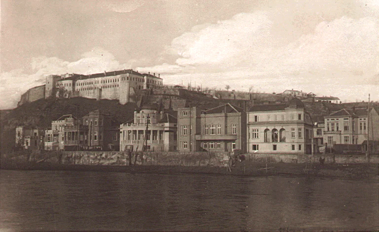
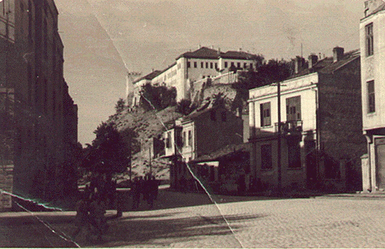

Кале
- Продукция
- УФУЖ и Документален филм Прага
- Сценарий и режисура
- Славко Яневски и EMAN CANERA
- Година
- 1959
- Времетраене
- 00:10

Входът на скопската крепост - Кале. (началото на 20 век)
Едно от най-доминиращите места в центъра на град Скопие заема скопската крепост - Кале*. Археологическите разкопки показват, че Кале е било населено още в праисторическо време - в епохата на неолита и ранната бронзова епоха. На Кале се е живеело поради изключителното му стратегическо положение. При проучването на сградата е установено, че в основите е използван материал от Скупи, който е бил почти напълно разрушен при катастрофалното земетресение през 518 година. След това земетресение градът се премества на днешното си място. Изградено е укрепление, което през вековете се разширява и укрепва. Днес е останала само малка част от него, която е реставрирана и в средата ѝ е направена алея.
* (Кале на турски означава крепост, а народът е възприел думата като кратко име на скопската крепост)

Скопската крепост - Кале с част от нейните стени.
- началото на 20 век

Скопската крепост - Кале - 1910-те.

Скопската крепост - Кале - снимана откъм днешния парк, края на 19 век.

Скопската крепост - Кале - 1910-те.

Скопската крепост - Кале - 1910-те.

Скопската крепост - Кале. Снимана от мястото на днешния парк, 1910-те.

Скопската крепост - Кале. Снимана от мястото на днешния парк, 1910-те.

Изглед към скопската крепост - Кале. 1920-те.

Изглед към скопската крепост - Кале от северната страна.
- 1910-те.

Прекрасна снимка на града и течението на р. Вардар. Вляво е скопската крепост - Кале. В центъра се виждат Офицерският дом и Народната банка. Вдясно е планината Водно, а в далечината краищата на планината Китка
- края на 1920-те.

Скопската крепост - Кале и старото кафене „Богес“, където се събирали актьорите и се изнасяли първите театрални представления - началото на 20 век.

Скопската крепост - Кале с казармените сгради - 1911 година. Под крепостта се вижда старото кафене „Богес“.

Скопската крепост - Кале и старото кафене „Богес“
- края на 1910-те.

Снимката е направена от Каменния мост около 1910 година. Вляво се вижда старият турски театър, а над него скопската крепост - Кале.

Снимката е направена от Каменния мост около 1910 година. Вляво се вижда старият турски театър, а над него скопската крепост - Кале.

Скопската крепост - Кале и старата Еврейска махала под нея - края на 1910-те.

Скопската крепост - Кале, с част от строящите се къщи в Еврейската махала - 1920-те.

Скопската крепост - Кале, а под нея част от къщите на Еврейската махала - 1920-те.

Скопската крепост - Кале и новопостроените сгради в Еврейската махала - 1920-те.

Скопската крепост - Кале с част от къщите на Еврейската махала - 1920-те.

Скопската крепост - Кале и новопостроените сгради в Еврейската махала - 1920-те.

Скопската крепост - Кале. Под нея е част от къщите на Еврейската махала - 1920-те.

Скопската крепост - Кале и новопостроените сгради в Еврейската махала - 1920-те.

Изглед към скопската крепост - Кале от една от улиците на Еврейската махала - 1920-те.

Снимка от Офицерския дом - около 1930 година. Прекрасна снимка на Народния театър, дървеното мостче и скопската крепост - Кале.

На преден план е Народният театър, а над него се издига скопската крепост - Кале - 1930-те.

Снимка на скопската крепост - Кале, на която ясно се виждат съставните части на укреплението. Под крепостта се вижда Народният театър в цялата си красота.
- 1930-те.

Снимка на скопската крепост - Кале, на която ясно се виждат съставните части на укреплението. Под крепостта се вижда Народният театър - 1930-те.

На преден план е Народният театър, а над него се издига скопската крепост - Кале - 1950-те.

 Акведукт4 картички
Акведукт4 картички Кале30 картички
Кале30 картички Мостове60 картички
Мостове60 картички Кей58 картички
Кей58 картички Площад46 картички
Площад46 картички Сгради66 картички
Сгради66 картички Християнски храмове19 картички
Християнски храмове19 картички Мюсюлмански сгради33 картички
Мюсюлмански сгради33 картички Офицерски дом29 картички
Офицерски дом29 картички Театър28 картички
Театър28 картички Железопътна гара13 картички
Железопътна гара13 картички Училища36 картички
Училища36 картички Паркове12 картички
Паркове12 картички Пазари18 картички
Пазари18 картички Улици38 картички
Улици38 картички Панорама I60 картички
Панорама I60 картички Панорама II30 картички
Панорама II30 картички Колажи55 картички
Колажи55 картички Наводнения9 картички
Наводнения9 картички Земетресение27 картички
Земетресение27 картички Скопие 200026 картички
Скопие 200026 картички